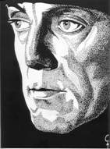
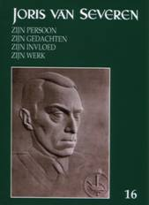
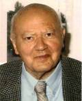

> nieuwsbrief > 2012 - nr 2
Inhoud
Hernieuwen
ledenbijdrage 2012
Als verduidelijkt in ons vorig nummer zagen
we
ons verplicht de basisbijdrage op te trekken tot 29 €. Vanaf 35
€ wordt
u als steunend lid geboekt. Deze “indexering” is, gezien het vlot
verloop van
de ledenhernieuwing, in ruime mate als noodzakelijk begrepen en
aanvaard.
Waarvoor hartelijk dank.
In de bijdrage is als vanouds het
abonnement op
onze Nieuwsbrief Joris van Severen en
op het zopas verschenen – al 16e – Jaarboek
Joris van Severen – zijn persoon, zijn gedachten, zijn invloed, zijn
werk
begrepen. Lid worden? Zie de
betreffende ‘link’.
‘Wij
willen de
Dietse Staat veroveren’
‘Extreemrechts
Verdinaso ageert tegen andere fascisten’, aldus titel en ondertitel van de zeven
pagina’s
tellende, rijk geïllustreerde bijdrage van Remon de Groot in het
magazine Wereld in oorlog (nummer 25/2011). Niet
steeds vrij van enige vooringenomenheid wordt daarin het verhaal
geschetst van
Joris van Severen, met de klemtoon op het Verdinaso-Nederland en de rol
van
Ernst Voorhoeve.
‘Kort
Manifest’
Zagen wij ons genoodzaakt in onze vorige Nieuwsbrief een sneer te richten aan het
adres van Kort Manifest, het
tijdschrift van het Vormingsinstituut Wies Moens, dan verwijzen we
thans graag
naar de ruime recensie die dit tijdschrift in zijn nummer 191
(november-december 2011) wijdde aan het 15e Jaarboek
Joris van Severen. Ook voor
De kritiek ligt hier – anders dan deze van
Lode Wils
(zie onze overwegingen daarbij onder de titel Zit het in
de genen? verderop in dit nummer) – minder op de
“links-rechts”-evolutie van Van Severen, dan wel – wat niet verbaast –
op de
latere “geopolitieke” evolutie die hem van Groot-Nederland naar
Heel-Nederland
leiden zou. Misschien had ook deze recensent – met zijn boude uitspraak
“Van
Severen is nooit een nationalist geweest en heeft het nationalisme
nooit
begrepen” – beter zijn oordeel in deze nog even opgeschort tot na
kennisname
van het vervolg van Vanlandschoots diepgravende studie over o.m. Van
Severens
destijds geruchtmakende essay over het Vlaams nationalisme. Niettemin
vindt ook
Truyens ons 15e jaarboek inhoudelijk een van de beste uit de gehele
reeks.
Waarvan graag akte!
Afscheid
van
‘Delta’
Wij vernemen dat na 47 jaar
ononderbroken jaargangen (een unicum in ons wereldje?) het
Heel-Nederlandse
maandblad delta
niet langer meer kan verschijnen. Jammer, maar
niets op deze wereld is nu eenmaal eeuwig. Dit betekent evenwel niet
dat de ‘Werkgemeenschap
De Lage Landen’, die het blad uitgaf, niet meer zou bestaan. Zij zet
haar actie
ononderbroken verder.
20
mei 1940
gedenkend
In dit nummer leest u vooreerst het
programma van de
jaarlijks door de Stichting Joris van
Severen ingerichte initiatieven ter nagedachtenis te Brugge en te
Abbeville. Verder ook het ooggetuigenverslag van een getuige – Maurits
van
Gijsegem - die de gruwel te Abbeville overleefde en dus kon
navertellen. Van
Gijsegem is trouwens de auteur van

Herdenking
aan het Bourgoensche Cruyce
Zaterdag
19
mei 11.00 uur: aan
de
toegangspoort tot het Bourgoensche Cruyce, het voormalige woonhuis
van Joris van Severen in de Wollestraat te Brugge memoreert een
gedenkplaat de
namen van de vier Brugse slachtoffers van het Bloedbad van
Abbeville. Sinds enkele jaren wordt daar door het
Brugse Abbeville Comité jaarlijks een
korte herdenkingsplechtigheid gehouden rond de datum van 20 mei. Dit
jaar valt
die plechtigheid op dezelfde datum als deze van de herdenkingsmis te
Male, en
wel op zaterdag 19 mei om 11.00 uur.
Na enkele korte toespraken
wordt de plechtigheid besloten met een bloemenhulde aan de gedenkplaat.
Jaarmis
in de kapel van het Slot van Male
Zaterdag 19 mei 16.00 uur:
Plechtige Gregoriaans gezongen H. Mis met homilie, opgedragen door de
E.H.
Roeland van Steenkiste, in de Abdijkapel van het Grafelijk Slot van
Male,
Pelderijnstraat 14, 8310 Sint-Kruis Brugge, ter nagedachtenis van Joris
van
Severen, zijn lotgenoten en al onze overledenen.
17.30 uur: Receptie, aangeboden door de Stichting
Joris van
Severen vzw, gevolgd door
de overhandiging van het 16e Jaarboek Joris van Severen aan de
aanwezige
leden van het Studiecentrum Joris van Severen.
Groet
aan het graf te Abbeville
Zondag 20 mei:
afspraak om 11.30
uur aan de toegang tot het kerkhof te Abbeville. Aansluitend
gezamenlijk
bezoek aan het graf van Joris van Severen en
Steun
en info
Wenst u op de hoogte gehouden te worden van
de
activiteiten van de Stichting Joris van Severen vzw,
dan kunt u
zich wenden tot de voorzitter
Voor het bezoek aan het graf te Abbeville
op zondag 22
mei maken we gebruik van de ‘samenrijden’-formule op kostendelende
basis. Dit
initiatief wordt gecoördineerd door
Jaarboek Joris van Severen 16 (2012)
In
deze
zopas verschenen jaarboekaflevering komt Joris van Severen
andermaal zelf aan
het woord. Na in 2009 zijn dagboeknotities van 12 november tot einde
1918 (zijn
oorlogsdagboek Die vervloekte oorlog eindigde
met de Wapenstilstand op 11 november 1918) en in 2010 zijn dagboek over
1919
integraal gepubliceerd te hebben, vangen we dit jaar de publicatie aan
van de
dagboeknotities
van het jaar
Gezien de omvang van het dagboek 1920 zagen
we ons verplicht het geheel
over meerdere jaarboeken op te delen. Ook deze dagboekbladzijden
documenteren
en illustreren overigens in heel wat de aanloop tot wat uiteindelijk
zijn
tijdschrift Ter Waarheid zou worden
en waarover hij het al op 15
Ook uit deze bladzijden van 1920 blijkt
weer hoezeer Van Severen de
toenmalige actualiteit opvolgde – en zich grondig kon ergeren aan de
mediocriteit van zijn medestrijders binnen de Vlaamse Beweging.
Maar ook zijn getormenteerde liefdesrelatie
met Germaine Duccobu biedt in
dit tijdsbestek stof tot menige zelfbespiegeling, waarbij zijn lectuur
vaak de
confronterende bron vormt.
Romain
Vanlandschoots
jaarboekbijdragen kunnen
met steeds meer recht beschouwd worden als even zoveel luiken van wat
terecht
als “een verfijnde biografie” mag omschreven worden over de cruciale
jaren
waarbinnen Van Severens omslag “van links naar rechts” zich voltrok. In
zijn
vervolgluik over het jaar 1923 richt de auteur de schijnwerpers daarbij
evenzeer op de parlementair als op de tenor binnen de toenmalige
Vlaamse
beweging, die Van Severen toen onmiskenbaar was. Maar vooral zijn
diepgaande
ontleding van Van Severens intellectuele ontwikkelingsgang, zoals deze
weerspiegeld werd in zijn maandblad Ter
Waarheid wekt bewondering voor de acribie waarmee de auteur zijn
stof
beheerst. Met “Wij
willen een principiële
politiek voeren” voegt de auteur daarmee andermaal een diepgravend
hoofdstuk toe aan zijn verfijnde biografie.
In Henri Bruning: van
katholiek
literator tot geëngageerd solidarist schetst Sjors
Remmereswaal in een breed exposé de Werdegang van
de Noord-Nederlandse Dinaso-voorman die, als exponent
bij uitstek van zijn katholieke jongerengeneratie, de weg vond naar
Joris van
Severen en zijn beweging. En met hem mensen als Ernest Michel en Ernst
Voorhoeve. De vraag waarom ze zich bij het Verdinaso aansloten krijgt
een
gedegen antwoord. Een andere vraag blijft open: deze waarom de vele
andere
jongkatholieken, die vanuit eenzelfde geestesingesteldheid ageerden,
dat niet
deden?
In het laatste essay van dit zestiende
jaarboek komt andermaal
Tot zover een inhoudsoverzicht van ons 16e
jaarboek, dat over 26 pagina’s
verspreid geïllustreerd is met niet minder dan 56
tekstondersteunende
illustraties.
_______________
N.a.v.
Joris van
Severen – zijn persoon, zijn
gedachten, zijn invloed, zijn werk – jaarboek 16 (2012). Gen.,
ill., 208
pp., ISBN
9789076057149, Ledenprijs 29€;
boekhandelprijs 35€.
Romain Vanlandschoots boeiende en
diepgravende bijdrage
over De unieke betekenis
van ‘Ter
Waarheid’ en het cultuurpolitieke klimaat in Vlaanderen na de Eerste
Wereldoorlog, in ons Jaarboek Joris
van Severen 15 (2011), liet enig stof opdwarrelen. Zo ook door
Lode Wils
die, in het jongste nummer van Wetenschappelijke
tijdingen (2011/4) onder de titel De
jonge Joris van Severen, poogt de analyse van Vanlandschoot
onderuit te
halen. Wils loopt in deze in het “eendimensionale” spoor van Mieke
Sertyn (zie onze
Nieuwsbrief Joris van Severen, 2012/1)
en weigert de bevindingen van Vanlandschoot rond “het
elkaar kruisen van een ‘links’ en een ‘rechts’ pad, in de
geestelijke ontwikkeling” van Joris van Severen te aanvaarden.
Van Severen was, in diens optiek, van meet
af aan
‘rechts’, alle opstandigheid ten overstaan van de militaristische
structuren en
alle verbale revolutionaire taal en sympathie voor de Russische
revolutie ten
spijt.
Hoe oud de eminente historicus ondertussen
geworden is
doet niets ter zake. Wel blijkt dat hij sindsdien wel het oude adagium
glad
vergeten is, dat stelt dat: “wie op zijn twintigste niet ‘links’ is
geen hart
heeft, en wie het op z’n veertigste nog is aan verstand ontbreekt.” En
dat hij
ook zijn klassieker uit het oog verloor, die het terecht had over “Zwei
Seelen
wohnen, ach! in meiner Brust” (uit Goethe’s Faust).
Overigens laat Wils na enige
verduidelijking te geven
bij wat hij inhoudelijk als ‘links’, respectievelijk ‘rechts’ betitelt.
Zelf
zouden we ‘links’ eerder vanuit het gemoed omschrijven als emotioneel
bewogen
door de (sociale) onrechtvaardigheid die men om zich heen vaststelt,
resulterend in het voornemen daar iets aan te doen. ‘Rechts’ zou in dit
perspectief dan eerder als bezinnend, evenwicht zoekend tussen gevoel
en
verstandelijk beredeneren, omschreven kunnen worden.
Overigens had Wils zijn eindoordeel rond de
inzichten
als verwoord door Vanlandschoot allicht beter opgeschort tot na
kennisname van
het volledige verhaal van laatstgenoemde. Onze lezers hebben deze al
even
diepgravende luiken van Vanlandschoots studie nog te goed in de
volgende Jaarboeken Joris van Severen.
Scriptieprijs Studiecentrum Joris van Severen
In de loop van de afgelopen decennia is
daartoe een
archief aangelegd rond Joris van Severen en zijn bewogen politieke
loopbaan, in
het bijzonder het Verbond van Dietse Nationaalsolidaristen (Verdinaso).
Dit
archief is in 2000 overgedragen aan de universiteitsbibliotheek van de
Katholieke Universiteit Leuven en werd aldaar ondertussen
geïnventariseerd door
dr. Bart Coppein.
Op basis van minimaal twee inzendingen zal
een
commissie binnen het Studiecentrum de prijs al dan niet toekennen aan
een
scriptie die handelt over de persoon Joris van Severen, het Verdinaso
of één
van de naoorlogse Nachfolge-bewegingen. De scriptie hoeft niet
noodzakelijk een eindscriptie te zijn, maar dient minstens tien
A4-pagina’s
bevatten.
Mocht u nog vragen of opmerkingen hebben,
aarzel dan
niet om contact met ons op te nemen.
Voor de beoordelingscommissie,
Drs. R.A.B. Bruijns
p/a Secretariaat Studiecentrum Joris van
Severen
Paddevijverstraat 2, 8900 Ieper
Zoveel jaren later: de bloedige maandag van Abbeville
Maurits
van
Gijsegem
Heeft het wel zin een 20-jaar oude,
bovendien
dieptragische episode uit de sombere oorlogsjaren nogmaals op te
rakelen? Deze
vraag kwam onwillekeurig bij me op toen één van mijn
goede vrienden mij
verzocht er een artikel in
En toch… Bij nadere overweging wilde het
mij voorkomen
dat een ooggetuige, vooral ter voorlichting van het jongere geslacht,
deze
gelegenheid niet mocht laten voorbijgaan om er op te wijzen hoe blinde
hartstochten, ontketend door een toegespitste oorlogspsychose en
aangewakkerd
door geïmproviseerde, onberedeneerde handelingen van
overheidswege, tot
rampspoedige en onherstelbare gevolgen kunnen leiden.
Op 10 mei 1940, al vroeg in de ochtend,
breekt het
oorlogsgeweld ook over ons land los. De algemene legermobilisatie wordt
afgekondigd.
De ministerraad komt in spoedvergadering bijeen en treft allerlei
uitzonderingsmaatregelen, vereist door de omstandigheden. De diensten
van de
staatsveiligheid treden krachtdadig op, hoofdzakelijk in het Vlaamse
land, en
laten door bemiddeling van de plaatselijke politie lukraak (er is
namelijk geen
tijd voor een ernstig vooronderzoek) honderden “verdachten” aanhouden
en naar
de gevangenissen overbrengen.
Door de snelle opmars van het Duitse
invalsleger
blijkt het niet mogelijk deze “onbetrouwbare elementen” langer dan een
paar
dagen in het eigen land vast te houden, en reeds in de loop van de
volgende
week worden zij met alle beschikbare vervoermiddelen, treinen, bussen
of
vrachtwagens, weerloos aan de Franse bondgenoot overgeleverd.
Toen begon voor de meesten onder hen de
lijdensweg pas
voor goed. De heersende paniekstemming en de steeds toenemende vrees
voor
spionnen en saboteurs, waarvan generaal Van Overstraeten in zijn
onlangs
verschenen oorlogsgedenkschriften getuigt dat zij in het Belgische
Hoofdkwartier
tot een ware obsessie was geworden, nam ook in Frankrijk een
onrustwekkende
uitbreiding, waarvan de geëvacueerde “verdachten”, die men
trouwens als
verraders had gebrandmerkt, onvermijdelijk het slachtoffer moesten
worden.
Een konvooi, samengesteld uit 78 personen,
waarvan de
meesten al met de hardvochtigheid van Belgische gevangenisbewakers en
Rijkswachters kennis hadden gemaakt, bereikte op zondag 19 mei 1940 bij
valavond Abbeville, de stad aan de monding van de Somme, waar Britse
strijdkrachten
er een massa legervoertuigen en oorlogsmaterieel bleken te hebben
samengetrokken.
In de stadsgevangenis konden de pas
aangekomenen er
geen onderdak meer vinden.
Al wat de gevangenen nog in het bezit
hadden moest op
de grond rondom de kiosk worden afgelegd. Een maatregel die sommigen
wel
verontrustte doch door anderen niet als ongewoon werd beschouwd, omdat
immers
in de gevangenis op dezelfde wijze tewerk werd gegaan.
Zo goed en zo kwaad als het ging zochten
zij zich in
de volslagen duisternis een plaatsje uit op de met vuilnis en afval
bedekte
cementvloer, daarbij vaak struikelend over blikken dozen en
benzinekruiken,
vermoedelijk door doortrekkende soldaten achtergelaten.
Iedereen had zware dagen achter de rug,
niemand bleef
van lichamelijke en zedelijke kwellingen gespaard, en het duurde dan
ook niet
lang of alles werd doodstil in deze ondergrondse gevangenis tot dewelke
nochtans af en toe het gedreun van voorbij snorrende auto’s of het
gezoem van
vliegtuigen; hoog in de lucht, doordrong.
Wij waren blij toen de dageraad in de lucht
kwam en
meteen de hoop ging rijpen zo spoedig mogelijk uit deze vunzige kerker
weg te
komen. Doch er gebeurde niets, en het zag er naar uit alsof men de
opgeslotenen
aan hun treurig lot overliet. Ook de uitdeling van het karige
dagelijkse
voedselrantsoen bleef achterwege … De uren slopen traag voorbij, en
toen, in de
vroege middaguren, brak plots de hel over Abbeville los.
Toen de aanval blijkbaar zijn hoogteput had
bereikt,
en het er weer betrekkelijk rustig werd, werd de deur van onze
schuilkelder
opengeslagen en trad een Franse officier in kakiuniform op ons toe.
Streng doch
niet opvallend dreigend, deed hij beroep op vier vrijwilligers om hem
naar buiten
te vergezellen. Zonder argwaan stonden vier personen die het dichtst
bij de
trap gezeten waren, recht en gaven gehoor aan het bevel. Nauwelijks was
de deur
achter hen gesloten of er vielen enkele geweerschoten. Dit maakte de
overgeblevenen niet uitermate ongerust. In oorlogstijd is het gebruik
van
vuurwapens immers iets doodgewoons, en het was best mogelijk dat men vi
In een adembenemende stilte wachten de
gekerkerden de
verdere gebeurtenissen af. De vier gewillige lotgenoten werden wellicht
ergens
heen gestuurd om een karwei op te knappen of om voedsel voor de
gevangenen aan
te brengen? Enkele minuten gingen in angstige spanning voorbij en toen
betrad
dezelfde officier andermaal de kelder van de kiosk, ditmaal met een
zware
dienstrevolver in de vuist. Hij had nog vier mannen nodig die meer dood
dan
levend naar buiten strompelden. Als wij een paar ogenblikken nadien
opnieuw een
geweersalvo hoorden weerklinken drong het ons door merg en been, en
werd het eenieder
duidelijk dat wij aan de wraaklust van gewetenloze soldeniers waren
overgeleverd.
Een derde en dan een vierde maal herhaalde
zich
hetzelfde hartverscheurende toneel.
In een wilde paniekstemming liepen de
mensen door
elkaar, gilden en huilden, of vielen op de knieën om het behoud
van hun
leven
af te smeken. Doch niets mocht baten. Systematisch werd de afslachting
voortgezet. Zelfs een 61-jarige vrouw bleef niet gespaard en werd als
het ware
onder de ogen van haar medegevangen dochter en kleindochter aan de
bloeddorstige soldateska overgeleverd.
Te midden van deze onbeschrijfelijke
atmosfeer van
lichamelijke en zedelijke foltering, van doodsangst en drang naar
zelfbehoud,
was er althans iemand die, naar het uiterlijke te oordelen, blijk gaf
van een
onverstoorbare zelfbeheersing.
Toen hij echter tot het besef was gekomen
dat zich
hier een gruwelijke tragedie afspeelde, werd het hem te machtig, en nam
hij het
heldhaftig besluit een uiterste poging te wagen om aan dit bloedbad een
einde
te maken.
Als aanvoerder van een strijdmilitie
waarbij orde en
tucht als de hoogste waarden golden, zou hij de Franse militairen in de
taal
van een soldaat, wellicht de enige die zij op dit ogenblik nog
verstonden, tot
het stopzetten van deze walgelijke moordpartij trachten te overreden.
Helaas, ook zijn moedig optreden om de
bezeten
soldateska tot bedaren te brengen mocht niet baten. Zijn poging tot
bemiddeling
werd op geweerschoten onthaald en ook
En toen gebeurde er iets dat ons allen met
stomme
verbazing sloeg.
Korte tijd nadien ging de kelderdeur open
en keerden
de vijf “veroordeelden” weliswaar diep onder de indruk van de doorstane
emoties, doch ongedeerd terug. Zij die de Dood in de ogen hadden gezien
wisten
te vertellen dat de bevelvoerende officier, toen de soldaten al hadden
aangelegd, hen toeschreeuwde nog niet te schieten. Na enkele palabers
tussen de
luitenant en zijn soldaten werden de vijf gespaarde lotgenoten opnieuw
in de
onderbouw van de kiosk gedreven.
Hoe deze plotselinge ommekeer zich voordeed
heeft
niemand met zekerheid kunnen verklaren. Was het de stem van een
ongerust
geweten die de eerloze Franse officier ertoe bracht zijn houding te
herzien en
te besluiten menselijker op te treden ten aanzien van verdachten die
wellicht
niet allemaal booswichten of verraders waren? Of is de andere versie
juist,
volgens dewelke hij van het Franse Hoofdkwartier in Le Havre
telefonisch bevel
zou hebben gekregen, dit op een wenk van de plaatscommandant van
Abbeville, de
wederrechtelijke fusillades onmiddellijk te staken? Wat er ook van zij,
het
betekende voor de 56 overlevenden het einde van een gruwelijke tragedie
waarbij
niet minder dan 21 mensen zonder vorm van proces werden omgebracht.
Eindelijk mochten wij onze vunzige en
duistere krocht,
waar we zonder eten of drinken bijna 24 uur hadden doorgebracht,
verlaten.
Onder een zwaar gewapende militaire geleide trok de colonne der
haverlozen en
uitgehongerden op rijen van vier door de verwoeste stad, waar soms over
metershoge puinhopen moest geklauterd worden om vooruit te komen.
In verband met de verantwoordelijkheid voor
deze
afschuwelijke mensenslachting zullen, helaas, vele vragen onbeantwoord
blijven.
De paniekstemming bij het uitbreken van de oorlog, de angstpsychose,
het huilen
met de wolven in het bos, en de hopeloze verwarring die een bezadigd
denken en
handelen praktisch onmogelijk maakte, moesten onvermijdelijk tot
betreurenswaardige vergissingen en misgrepen leiden. (…)
Op een wenk van de staatsveiligheid werden
honderden
mensen in hechtenis genomen en naar gevangenissen gesleept; velen
zonder enige
gegronde reden, en daarna aan hun lot overgelaten. Zij werden zelfs
niet eens
verhoord, kregen niet de minste kans zich te verdedigen en werden
overal waar
zij terecht kwamen, niet als beklaagden of verdachten, doch als
booswichten en
verraders beschouwd en behandeld. Zij werden tenslotte, zonder enige
waarborg
voor hun persoonlijke veiligheid, onder een vloed van scheldwoorden,
overgeleverd aan een vreemde, zij het bevriende mogendheid.
Was het in dergelijke omstandigheden niet
onvermijdelijk dat deze weerloze mannen en vrouwen zich aan het ergste
konden
verwachten en hun leven weinig of geen waarde had in de ogen van de
nieuwe
toezichthouders? Gaan de Fransen dan vrijuit?
Geenszins, want wederrechtelijke executies
zoals deze
welke te Abbeville plaatsvonden zijn onder geen enkel voorwendsel goed
te
praten. De daad op zichzelf was wreed en afschuwelijk, doch aan het
scheppen
van de verderfelijke en noodlottige atmosfeer die het plegen van deze
daad op
een ogenblik van zware overspanning (de brutale Duitse luchtaanval)
mogelijk
maakte, hebben onze eigen bewindvoerders zonder enige twijfel de
grootste
schuld gehad. (…)
Er werd angstvallig voor gezorgd aan het
bloedig
gebeuren te Abbeville niet de minste openbaarheid te geven. De doden
worden
immers gauw vergeten als niemand er nog over spreekt. En hadden
bepaalde
kringen er niet alle belang bij het licht onder de korenmaat te houden
om geen
verantwoording te moeten nemen voor eigen fouten en tekortkomingen?
Twintig jaren zijn [anno 1960] over deze
vreselijke
tragedie heengegaan. Een nieuwe generatie is opgegroeid die zich van de
sombere
oorlogsjaren weinig of niets zal herinneren. Al heeft de woelige wereld
waarin
wij leven voortdurend reden tot bezorgdheid, toch vleien wij ons met de
hoop
dat de balans der krachten naar de goede kant zal blijven overhellen.
Honderdduizenden die tweemaal aan de lijve
ondervonden
hebben welke ontzaglijke rampen een oorlog over de mensheid kan
brengen, moeten
wel hartstochtelijke voorstanders zijn van vrede en internationale
verstandhouding.
Mochten wij voor altijd gespaard blijven
van de
verblinde hartstocht en de willekeurige massa-aanhoudingen en
–vervolgingen
waarvan ook de 21 ongelukkigen die er op 20 mei 1940 te Abbeville het
leven bij
inschoten, de beklagenswaardige slachtoffers zijn geworden.
_______________
Noot: Maurits van Gijsegem is ook
de auteur van het in 1941 verschenen ooggetuigenverslag
BeNeLux een “categorische imperatief”
Prof.
BeNeLux, men zou het een Trias
Politica sui generis, eigensoortig dus, kunnen noemen, of een
Staatkundige
Drieëenheid. De Romeinen zeiden al: Tres
faciunt collegium oftewel: drie vormen een gezelschap. Echter we
weten: één
en één en één vormen – soms – maar in zeer
betrekkelijke zin: drie. Wat
wil ik
hiermee zeggen? Dat bij nader inzien in meerdere of mindere mate valt
af te
dingen op het monolithisch karakter van elk der drie componenten van de
Benelux, zoals we allen uiteraard reeds weten.
Even in vogelvlucht: natuurlijk, in
België
hebben we
Vlaanderen en Wallonië. Maar neem Vlaanderen: West-Vlaanderen is
toch
best
verschillend van Limburg al hebben ze dan beide het Algemeen Beschaafd
Nederlands (ABN) als officiële taal gemeen.
En in Bouillon voelt het leven anders aan
dan in “la cité
ardente”, Luik, om maar eens wat te noemen. En Nederland? De
mentaliteit in
Heerlen is toch wel anders dan in Hoogeveen bijvoorbeeld.
En wat te zeggen van Luxemburg? Dat heeft
iets van een
toverbal, het hangt er maar vanaf welke linguistische laag je aanboort.
Men
spreekt de eigen taal uiteraard, het Letzeburgisch, zeer velen zijn
vlot in
Duits en men beheerst het Frans perfect.
Waar willen we met deze wat lichtvoetig –
beschouwende
inleiding naar toe? In één woord: éénheid
bestaat in een – altijd
relatieve –
verscheidenheid, of, om het met een citaat uit het opschrift te zeggen
van de
Rijksuniversiteit Utrecht aan het Domplein aldaar: “ex
variis radiis lux candida”: het schitterende licht wordt
gevormd uit diverse stralen.
Deze wat poëtische omschrijving
herbergt
ook een politieke
boodschap. Namelijk: verschillen, verscheidenheid hoeven een zekere
symbiotische eenheid niet in de weg te staan, leveren zelfs een
meerwaarde op,
kortom: een plus één plus één is meer dan
drie, levert een synergetisch
effect
op.
En natuurlijk heeft Wallonië, heeft
een
groot deel van
Brussel een markant onderscheid met het overige Beneluxgebied,
Nederland en
Vlaanderen speciaal, door de Franstaligheid. Dat echter een blokkade te
noemen
voor verdergaande cohesie binnen de Benelux is defaitistisch en
bekrompen.
Immers er zijn meerdere meertalige voorbeelden van florerende landen,
denk aan
Canada en Zwitserland bijvoorbeeld, maar ook om eens te noemen, India
en de
Filippijnen kennen een aantal talen.
Ik durf de stelling aan dat in een –
hypothetische –
Benelux-staat het soortelijk gewicht, het “poids” van Wallonië
bepaald
groter
zou zijn, dan in het geval van aanhechting tot perifeer gebied bij
Frankrijk.
Wan het “Quebec van de Benelux” zou dan een “status aparte” genieten,
met een
specificiteit en prestige, niet vergelijkbaar met de meeste Franse
departementen. Dit zou ook een verrijkende uitstraling hebben naar het
overige
Benelux-gebied.
Ik durf ook de stelling aan dat de
tegenstelling een valse is
tussen de zogenaamde Groot-Nederlandse gedachte: de toenadering tussen
Nederland en Vlaanderen en de Heel-Nederlandse optie: een
voortschrijdende
cohesie binnen de Benelux als geheel. Immers de Heel-Nederlandse visie
omvat
mede de Groot-Nederlandse, staat deze niet in de weg maar biedt
meerwaarde door
de complementaire factor van de Franstalige, “romaanse” entiteit en
cultuur.
Laten we even de geschiedenis induiken.
Op onze generatie rust de uitdaging de
naoorlogse
Benelux-aanzet verder te ontwikkelen, een quantumsprong, een “saut
qualitatif”
te geven, onder het motto: “wij horen bij elkaar”. En wel om historisch
gefundeerde, maar ook actuele geopolitieke, economische, culturele en
sociale
redenen.
De geschiedenis hebben we net heel kort
doorlopen.
Geopolitiek bezien, alsook economisch is
het synergetisch
effect van toenemende onderlinge afstemming binnen onze Rijn- Maas- en
Schelde
regio, een “gouden delta”, als één geïntegreerd
gebied, evident. Een
toegangspoort vormt deze ook ten opzichte van het Europese
“hinterland”.
Dat in het zich uitbreidende en onderling
wel eens in de
clinch liggend Europese Unie-gezelschap een gezamenlijk opererende
Benelux een
reële macht zou zijn, is zo helder als glas. Onze gezamenlijke
economie
is
groter dan de Italiaanse, nog afgezien van alle andere problemen die
dat land
heeft. En toch maakt Italië – en niet de Benelux, omdat die
staatkundig
niet
bestaat – deel uit van het exclusieve gezelschap van de G-7.
Sociaal en cultureel zou een intensieve
dynamiek van
convergentie binnen de Lage Landen eveneens vruchten afwerpen. Een
grotere, en
gediversifieerdere arbeidsmarkt biedt ruimere mogelijkheden en een
“bad” nemen
in regio’s die – relatief – cultuurhistorisch verschillen is altijd
verrijkend.
En zouden wij onze strijdkrachten ook niet eens “poolen”, en van elkaar
leren?
Wat ik dus bepleit, is het toewerken naar
een Benelux politieke
unie via een confederatie – een statenbond – naar een federatie – een
bondsstaat. Dat is uiteraard een proces of, om een bekende dichtregel
te
citeren: “Tussen droom en daad staan wetten en praktische bezwaren”.
Ingrijpende, historische beslissingen die
eventueel
letterlijk grensverleggend het speelveld veranderen kan men echter
nooit in
alle consequenties ten volle qua uitwerking voorzien. Er zit altijd een
element
in van sprong in het onbekende. Dat mag echter geen excuus zijn om
altijd maar
tot vervelens toe binnen de bestaande lijntjes te blijven kleuren.
We moeten niet ongevoelig zijn voor “the
magic of thinking
big”. Vandaar dat ik durf te zeggen: begin ermee de Benelux-staat in de
steigers te zetten!
_____________
Prof.
We vernamen ietwat laattijdig
het overlijden van René Dom uit
Kontich. Hij was een oud-Dinaso, lid ook van Delta en destijds
medewerker van
het voormalige Nationaal Documentatiecentrum Joris van Severen te
Aartselaar en
trouw lid van ons studiecentrum. Hij werd geboren te Oostende op 26
juli 1919
en is overleden in het UZA te Edegem op 3 december 2011.
Octaaf Verbeke (Staden
25 februari 1925-Kuurne 12 december 2011) was een zoon van Henri
Verbeke en de
broer van Jef Verbeke. Beide broers stonden destijds in de leiding van
het
Rodenbach-vendel van het Jong Dinaso. Octaaf was sinds jaar en dag lid
van ons
Studiecentrum Joris van Severen. Zijn kinderen Luc en Greet Verbeke
schonken
uit zijn kunstverzameling een marine van
In deze rubriek verwijzen we
zonder veel commentaar naar recente publicaties waarin Joris van
Severen en/of
het Verdinaso vermeld worden. We citeren de meest treffende passussen
woordelijk zonder daarin volledigheid na te streven. We verzoeken onze
lezers,
met ons, uit te zien naar publicaties die voor deze rubriek 'stof'
kunnen
leveren en ons kopie van de betreffende passages toe te sturen.
Die faschistischen Bewegungen
“(…) Daß sich von der
Katholischen Partei eine flämische Nationalisten-partei
abspaltete,
mochte der
Beschleunigung des Prozesses dienlich sein: nur wenn sich diese
f1äimischen
Nationalisten Ziele setzten, die sich im Rahmen des parlamentarischen
Systems
nicht verwirklichen ließen, mussten sie auf antiparlamentarische
Wege
getrieben
werden, und das hieß im Europa der Zwischenkriegszeit beinahe mit
Notwendigkeit: auf faschistische Wege.
Dem stand zunächst
allerdings die
starke demokratische Tradition der flämischen Bewegung entgegen.
So
kamen die
ersten uniformierten Gruppen, die sich am Beispiel Mussolinis
orientierten,
gerade aus dem Gegenlager, nämlich aus den Kreisen der
wallonischen
Frontkämpfer. Dem ”Faisceau Belge”, der ”Légion Nationale
Belge” des
Generals
Graff, der “Action Nationale” des späteren Senators Pierre Nothomb
ging
es vor
allem um eine Politik der starken Hand gegenüber dem besiegten
Deutschland, dem
die schwache Politik der ”Systemparteien” gefährliche
Möglichkeiten zu
eröffnen
schien.. Daß sich die Politik dieser Verbände
zugleich sehr
nachdrücklich gegen die Sozialisten richtete, entsprach der Logik
ihrer
Sache,
denn Männer wie der Sozialistenführer Vandervelde
zählten in Belgien zu
den
ersten, welche die Ungerechtigkeiten des Versailler Vertrages anklagten
und dem
neuen Deutschland eine faire Chance geben wollten. Daß ihnen die
Kriegsergebnisse ganz unzureichend erschienen, versteht sich beinahe
von
selbst: mindestens eine Zeitlang schwelgten sie in annexionistischen
Träumen
und wollten durch die Gewinnung Luxemburgs und einiger
holländischer
Provinzen
ein ”Großbelgien” schaffen.
Nicht die Vergrößerung
Belgiens,
sondern seine Zerschlagung war das Ziel der ebenso weittragenden,
ebenso wenig
innerhalb des liberalen Systems zu verwirklichenden Pläne des
radikalsten
Flügels der belgischen Bewegung, der seit 1931 auf
den Plan trat. Der ”Verbond van Dietsche
Nationaalsolidaristen” gab indessen schon mit seinem Namen ein
Doppelziel zu
erkennen: innenpolitisch richtete er sich gegen die Parteien und den
Klassenkampf, außenpolitisch strebte er die Bildung des
“dietschen”, d.
h.
groß-niederländischen Nationalstaates an, der auch
Französisch-Flandern
einschließen und mit seinen Kolonien ein Reich von über 50
Millionen
Einwohnern
bilden sollte. Der Gründer der Bewegung, Joris van Severen, war
Abgeordneter
der flämisch-nationalistischen Frontistenpartei gewesen und
verstand
es,
vornehmlich in Westflandern einige tausend Anhänger zu gewinnen,
die er
ganz
nach faschistischem Muster organisierte: die Mitglieder der
Dinaso-Miliz trugen
als Uniform dunkelgrüne Jacken, grüssten mit erhobenem
rechtem Arm und
dem Ruf
“Heil ’t Dinaso” und führten Standarten mit, auf denen die Parole
“Dietschland
en Orde” (Dietschland und Ordnung) und das Abzeichen zu sehen waren,
ein Pflug
mit Zahnrad und Schwert als Symbol des korporativ vereinten Volkes.
Jugend-,
Frauen- und Gewerkschaftsabteilungen rundeten die Organisation ab. Es
war ein
anschaulicher Beweis für die staunenswerte Toleranz des liberalen
Systems, daß
sich eine so unverhüllt staatsfeindliche Gruppe ohne nennenswerte
Behinderungen
entfalten durfte. Es mag allerdings sein, daß in Brüssel die
Absicht
leitend
war, die flämische Front zu schwächen und die
antimarxistischen
Tendenzen zu
stärken, wenn nicht sogar eine tiefere Einsicht in Van
Severens
Denkweise vorlag, der sich allen deutschen Annäherungsversuchen
gegenüber sehr
reserviert verhielt und seine Anhänger fest genug in der Hand
hatte, um
ihnen
einige Zeit vor dem Kriege eine Umstellung von dem
groß-niederländischen auf
den großburgundischen Gedanken zuzumuten. (…)“
_________________
Ernst Nolte, Die
faschistischen Bewegungen, dtv-1966, pp. pp. 273-274.
Waar en onwaar
“(…) Einen neuen
Auftrieb erhielt die großniederländische Idee, als im
Oktober 1931 der
fanatische flämische Offizier Joris van Severen den ‚Verbond van
Dietse
Nationaalsolidaristen’ (Verdinaso) mit dem Ziel gründete, die
Vereinigung
Belgiens mit den Niederlanden (ohne Friesland) herbeizuführen.
Abgeschreckt
durch ihr militantes Auftreten und durch ihren scharfen Antisemitismus,
schlossen sich bis zum Herbst 1933 nur etwa 130 junge
Niederländer,
größtenteils katholische Studenten, dieser faschistischen
Bewegung an.
Im
Oktober 1939 übernahm der Niederländer Voorhoeve die Leitung
über
‚Verdinaso-Nederland’.(…)“
_______________
Bron: Konrad Kwiet, Zur
Geschichte der
Mussert-Bewegung, in: Vierteljahreshefte
für Zeitgeschichte, Jahrgang 18, 1970, Heft 2.